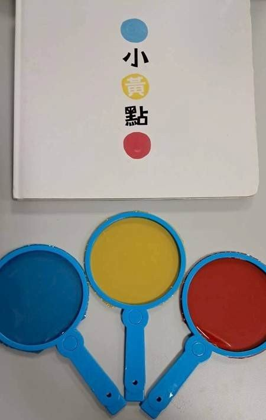
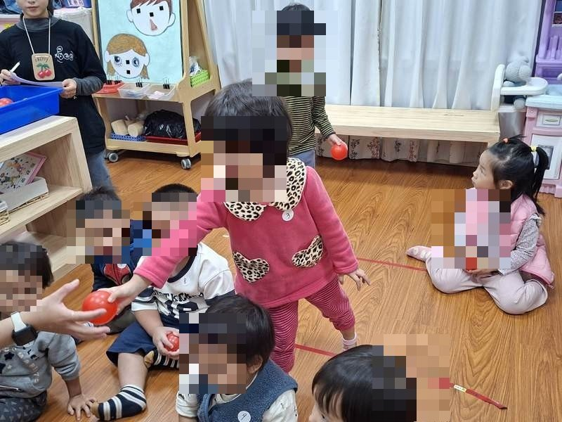
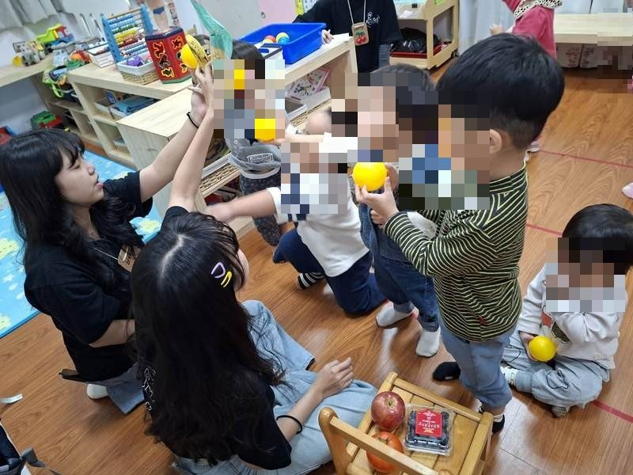
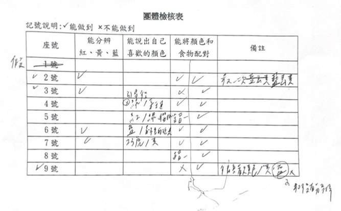
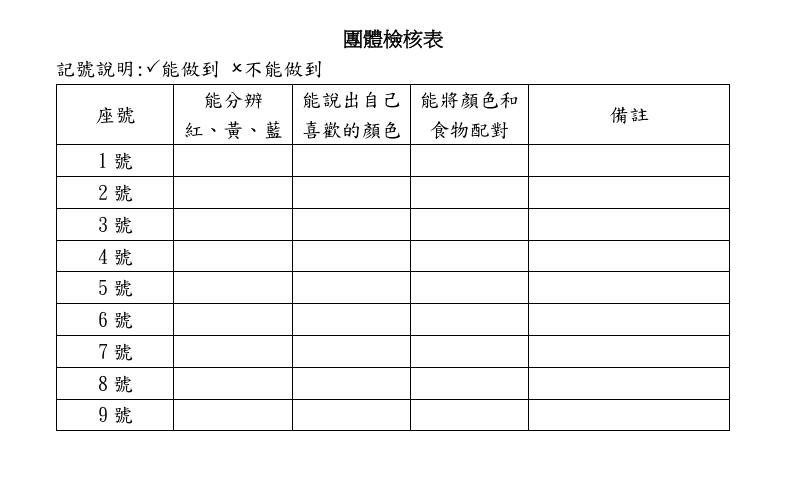

課程目標與學習指標
美-2-1 發揮想像並進行個人獨特的創作（美-幼-2-1-1）；認-2-2 整理自然現象訊息間的關係（認-幼-2-2-1）
活動怎麼進行
第一次試教｜顏色變變變
以繪本《小黃點》說演兩次帶出紅黃藍，再發給每人三色玻璃紙觀察鏡，讓幼兒體驗「整個世界變成紅色／藍色／黃色」的視覺變化，並引導描述所見。
第二次試教｜顏色迷路了
以真實蔬果連結顏色（蘋果—紅、香蕉—黃、藍莓—藍），進行「顏色找找看」「顏色迷路了」「分類小高手」三個層次的配對遊戲：從單一指認、對應歸位到小組競賽分類。
評量怎麼設計
- 工具：自編「團體檢核表」——縱軸為幼兒座號，橫軸為三個評量重點（能分辨紅黃藍／能說出自己喜歡的顏色／能將顏色和食物配對），教師於活動中觀察勾選，備註欄補記個別狀況。
- 分工：教學者專心帶活動，其餘組員擔任觀察記錄者。
評量看見了什麼
- 多數幼兒（5/7）能正確辨識黃色與紅色；藍色辨識率明顯偏低（僅 2/7），是本班最需要加強的顏色。
- 一位幼兒三色皆無法辨識、整場活動幾乎無反應——評量結果成為與家長溝通、建議進一步專業評估的具體依據。
- 「顏色與食物配對」表現最好：生活情境中的顏色應用對幼幼班最容易上手。
教學現場的即時調整
- 第一次試教發現藍色辨識較慢，第二次立即加入更多藍色提示與示範。
- 針對只能辨識單一顏色的幼兒，規劃納入個別化教學循序加強。
這組的反思
- 「無法邊教學邊記錄」是最大實務困難——建議增加錄影輔助，或如本組採取教學／記錄分工。
- 檢核表可預先設定程度層級（如「經提醒可分辨」「需更多提醒」），比單純打勾更能呈現幼兒差異。
- 重複進行的遊戲（如三輪分類賽）可在表上直接分欄記錄每一輪結果。
給現場老師的啟示
評量不是活動結束後的手續：這組把每一筆檢核結果都變成了下一步教學的依據——從全班的「藍色弱」到個別幼兒的轉介線索。幼幼班的檢核表宜少項目、重分工，並為「程度差異」預留欄位。
現場紀實





